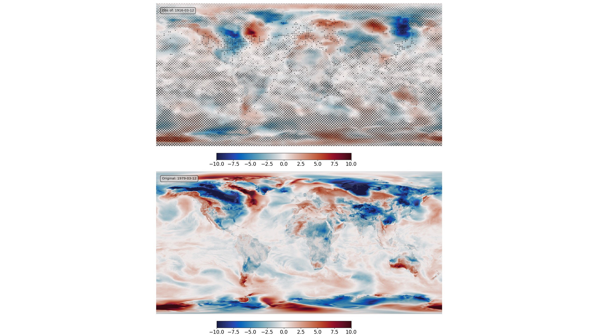

Data Assimilation by optimisation in latent space¶

Bottom - original field (ERA5 T2m anomaly), top - assimilation results. Black dots mark observations assimilated (surface obs (ISPD) coverage for 1916), grey hatching marks regions where the result is very uncertain.¶
Script to find the optimal latent-space location and make the validation figure:
#!/usr/bin/env python
# Find a point in latent space that maximises the fit to a set of pseudo-obs,
# and plot the fitted state.
# Make multiple fits and plot the ensemble.
import os
import sys
import numpy as np
import tensorflow as tf
import tensorflow_probability as tfp
from tensorflow_addons.image import interpolate_bilinear
import random
import iris
import IRData.twcr as twcr
import datetime
import matplotlib
from matplotlib.backends.backend_agg import FigureCanvasAgg as FigureCanvas
from matplotlib.figure import Figure
import argparse
import pickle
parser = argparse.ArgumentParser()
parser.add_argument("--epoch", help="Epoch", type=int, required=True)
parser.add_argument(
"--ensemble", help="No. of ensemble members", type=int, required=False, default=10
)
parser.add_argument("--year", help="Year", type=int, required=False, default=1979)
parser.add_argument(
"--month", help="Integer month", type=int, required=False, default=3
)
parser.add_argument("--day", help="Day of month", type=int, required=False, default=12)
parser.add_argument("--oyear", help="Year", type=int, required=False)
parser.add_argument("--omonth", help="Integer month", type=int, required=False)
parser.add_argument("--oday", help="Day of month", type=int, required=False)
parser.add_argument(
"--osize", help="Obs. point size", type=float, required=False, default=1.0
)
parser.add_argument(
"--noise", help="Ob noise stdev (C)", type=float, required=False, default=0.0
)
args = parser.parse_args()
if args.oyear is None:
args.oyear = args.year
if args.omonth is None:
args.omonth = args.month
if args.oday is None:
args.oday = args.day
# Functions for plotting
sys.path.append("%s/../validation" % os.path.dirname(__file__))
from plot_ERA5_comparison import get_land_mask
from plot_ERA5_comparison import plot_T2m
from plot_ERA5_comparison import plot_colourbar
# Make the input tensor for the specified date
sys.path.append(
"%s/../../../data/prepare_training_tensors_ERA5_T2m" % os.path.dirname(__file__)
)
from ERA5_load import ERA5_load_T2m
from ERA5_load import ERA5_load_T2m_climatology
from ERA5_load import ERA5_load_T2m_variability_climatology
from ERA5_load import ERA5_roll_longitude
from ERA5_load import ERA5_trim
t = ERA5_load_T2m(args.year, args.month, args.day)
c = ERA5_load_T2m_climatology(args.year, args.month, args.day)
t = t - c
t /= 15
t += 0.5
t = ERA5_roll_longitude(t)
t = ERA5_trim(t)
t_in = tf.convert_to_tensor(t.data, np.float32)
t_in = tf.reshape(t_in, [1, 720, 1440, 1])
# Get the ob locations at the given time from 20CRv3
dte = datetime.datetime(args.oyear, args.omonth, args.oday, 12)
obs = twcr.load_observations_1file(dte, version="3")
# Convert the obs locations to a tensor in the right units (0-1)
t_lats = (obs["Latitude"].values + 90) / 180
t_lons = (obs["Longitude"].values) / 360
t_lons[t_lons > 0.5] -= 1
t_lons += 0.5
t_lats = tf.convert_to_tensor(1.0 - t_lats, tf.float32)
t_lons = tf.convert_to_tensor(t_lons, tf.float32)
t_obs = tf.stack((t_lats * 720, t_lons * 1440), axis=1)
t_obs = tf.expand_dims(t_obs, 0)
exact = tf.squeeze(interpolate_bilinear(t_in, t_obs, indexing="ij"))
# Filter out the nans (bad lat/lon)
t_obs = tf.boolean_mask(t_obs, ~tf.math.is_nan(exact), axis=1)
exact = tf.boolean_mask(exact, ~tf.math.is_nan(exact), axis=0)
# Set up the model and load the weights at the chosen epoch
sys.path.append("%s/.." % os.path.dirname(__file__))
from autoencoderModel import DCVAE
autoencoder = DCVAE()
weights_dir = ("%s/Proxy_20CR/models/DCVAE_single_ERA5_T2m/" + "Epoch_%04d") % (
os.getenv("SCRATCH"),
args.epoch,
)
load_status = autoencoder.load_weights("%s/ckpt" % weights_dir).expect_partial()
# Check the load worked
devn = load_status.assert_existing_objects_matched()
# We are using it in inference mode
# (I'm not at all sure this actually works)
autoencoder.decoder.trainable = False
for layer in autoencoder.decoder.layers:
layer.trainable = False
autoencoder.decoder.compile()
# Find a latent state which generates a field fitted to the pseudo obs.
def findLatent(
autoencoder,
latent,
ob_locations,
pseudo_obs,
num_steps=1000,
optimizer=tf.optimizers.Adam(learning_rate=0.05),
):
def decodeFit():
decoded = autoencoder.decode(latent)
at_obs = tf.squeeze(interpolate_bilinear(decoded, t_obs, indexing="ij"))
return tf.keras.metrics.mean_squared_error(pseudo_obs, at_obs)
loss = tfp.math.minimize(
decodeFit,
trainable_variables=[latent],
num_steps=num_steps,
optimizer=optimizer,
convergence_criterion=tfp.optimizer.convergence_criteria.LossNotDecreasing(
atol=0.00001, min_num_steps=100
),
)
return (latent, loss)
# Make a set of fitted fields
# fitted = []
# for i in range(args.ensemble):
latent = tf.Variable(tf.random.normal(shape=(args.ensemble, autoencoder.latent_dim)))
pseudo_obs_sample = exact + tf.random.normal(
shape=exact.shape, mean=0.0, stddev=args.noise / 15, dtype=tf.float32
)
(latent, loss) = findLatent(autoencoder, latent, t_obs, pseudo_obs_sample)
fitted = autoencoder.decode(latent)
# fitted.append(autoencoder.decode(latent))
# fitted = tf.stack(fitted, axis=0)
fig = Figure(
figsize=(15, 15),
dpi=100,
facecolor=(0.88, 0.88, 0.88, 1),
edgecolor=None,
linewidth=0.0,
frameon=False,
subplotpars=None,
tight_layout=None,
)
canvas = FigureCanvas(fig)
matplotlib.rcParams.update({"font.size": 16})
ax_global = fig.add_axes([0, 0, 1, 1], facecolor="white")
ax_global.set_axis_off()
ax_global.autoscale(enable=False)
ax_global.fill((-0.1, 1.1, 1.1, -0.1), (-0.1, -0.1, 1.1, 1.1), "white")
lm = get_land_mask()
# Bottom - original field
ax_of = fig.add_axes([0.075, 0.065, 0.85, 0.425])
ax_of.set_aspect("equal")
ax_of.set_axis_off()
ax_of.set_xlim(-180, 180)
ax_of.set_ylim(-90, 90)
ofp = plot_T2m(
ax_of,
(tf.squeeze(t_in).numpy() - 0.5) * 15,
vMin=-10,
vMax=10,
land=lm,
label="Original: %04d-%02d-%02d" % (args.year, args.month, args.day),
)
ax_ocb = fig.add_axes([0.05, 0.025, 0.81, 0.02])
plot_colourbar(fig, ax_ocb, ofp)
# Top, encoded field
e_mean = tf.math.reduce_mean(fitted, axis=0)
e_std = tf.math.reduce_std(fitted, axis=0)
c_std = ERA5_load_T2m_variability_climatology(1981, 3, 12)
c_std /= 15
c_std = ERA5_roll_longitude(c_std)
c_std = ERA5_trim(c_std)
c_std = tf.convert_to_tensor(c_std.data, np.float32)
c_std = tf.reshape(c_std, [1, 720, 1440, 1])
ax_ef = fig.add_axes([0.075, 0.565, 0.85, 0.425])
ax_ef.set_aspect("equal")
ax_ef.set_axis_off()
ax_ef.set_xlim(-180, 180)
ax_ef.set_ylim(-90, 90)
efp = plot_T2m(
ax_ef,
(tf.squeeze(e_mean).numpy() - 0.5) * 15,
vMin=-10,
vMax=10,
fog=tf.squeeze((e_std / c_std)).numpy(),
fog_threshold=0.33,
obs=tf.squeeze(t_obs).numpy(),
o_size=0.5,
land=lm,
label="Obs of: %04d-%02d-%02d" % (args.oyear, args.month, args.day),
)
ax_ecb = fig.add_axes([0.05, 0.525, 0.81, 0.02])
plot_colourbar(fig, ax_ecb, efp)
# pickle.dump((t_in, e_mean, c_std, e_std, t_obs), open("tst.pkl", "wb"))
fig.savefig("fit_multi.png", facecolor="white")

{kind=link}